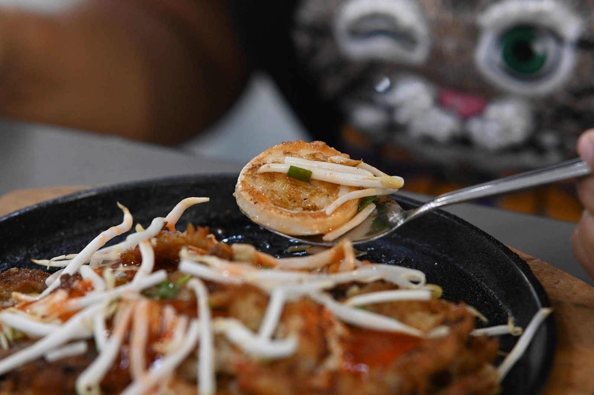
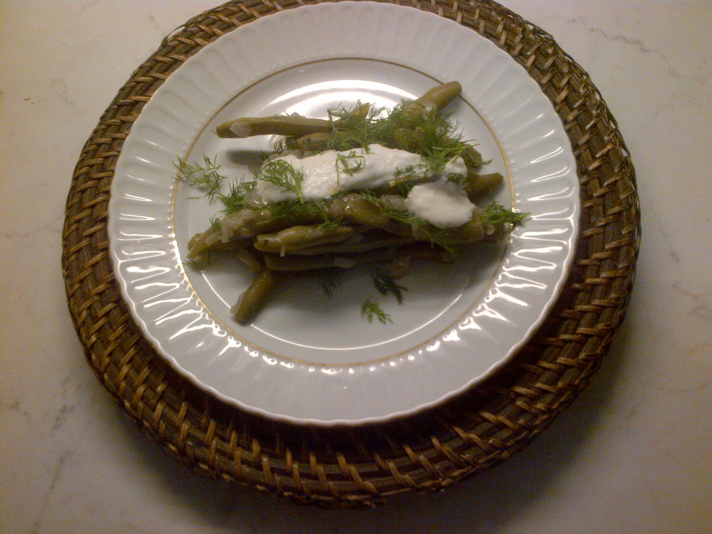
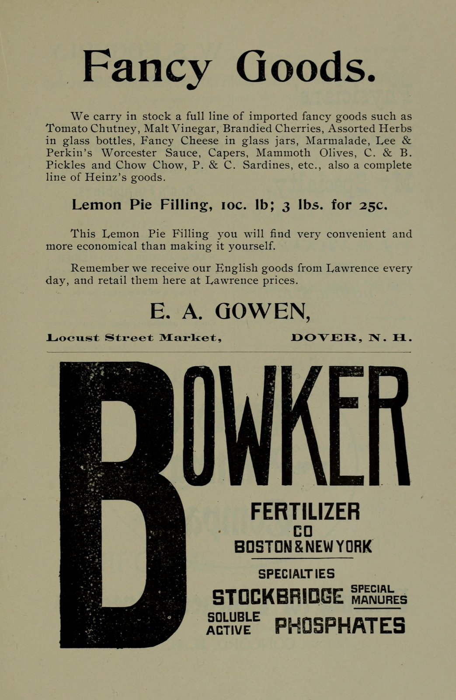
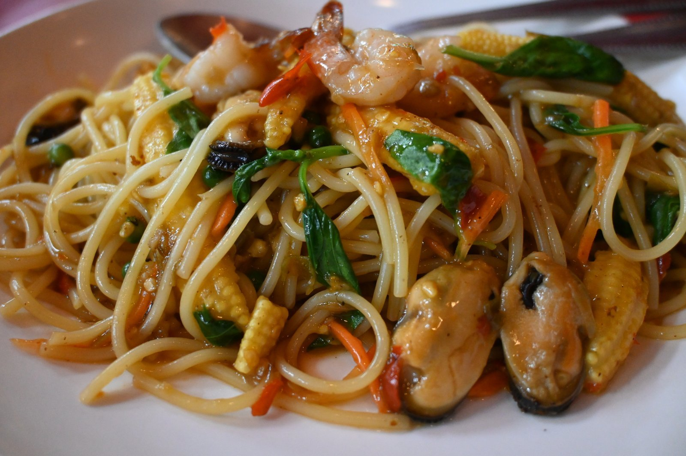
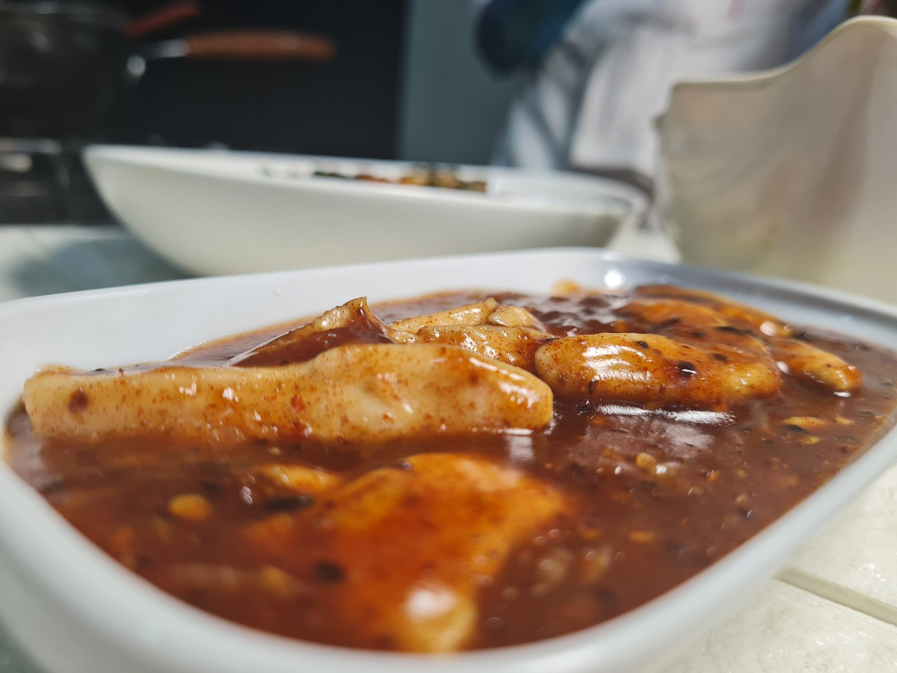
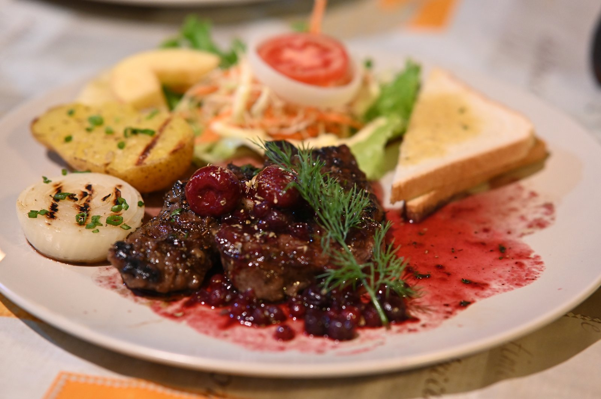

Artisanal Culinary Allocations
Crafted for Michelin-starred kitchens, discriminating gourmands, and passionate culinary artisans who demand absolute purity in botanical acidity.

Imperial Tartaric Glaze
A slow copper-pan reduction of sun-ripened tamarind pulp with wild palm jaggery, black cardamom, and crushed citrus peel. Perfect for lacquering roasted poultry and game.

Smoked Terracotta Lacquer
Formulated specifically for high-temperature roasting and braising. Coats autumn roots, winter squash, and charred greens with a glistening, savory, sweet-tart crust.

Heritage Chutney Vintage
Small-batch preserves macerated with whole roasted cumin, black salt, and freshly grated ginger inside heavy glass jars. An essential accompaniment for tasting boards.

High-Heat Wok Reductions
Under blistering carbon-steel wok heat, natural tamarind sugars caramelize instantly against noodles, releasing an unmistakable umami aroma.

Aromatic Spice Curry Pastes
Tamarind's tartaric backbone anchors pungent alliums and searing capsicums, creating balanced curry pastes that don't scorch or separate.

Haute Degustation Garnish
Precision-plated glaze dots provide instantaneous palate awakeners, cutting through decadent buttery sauces and rich confit textures.